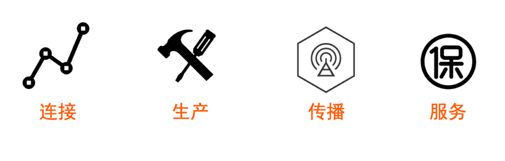

阿里巴巴高级算法专家威视：组建技术团队的一些思考
Photo @https://hackernoon.com/
文 |威视
因为信任，所以简单。
本文是我从2019年1月底接手CRO线NLP算法团队以来，在团队组建、能力建设、以及管理上的一些思考，全部是没有科学论证的主观判断，不过都进行了实践。我没有任何管理学背景知识，把拙见没羞没臊地写出来，是为了抛砖引玉，和同学们交流讨论。
团队的定位是什么？——做正确的事
定位
团队的定位是重要的事情之一，有了偏差，后续做得越多错得越多。确定团队的定位花了我很长时间，中间还发生了一次组织变化，和两任主管有多次讨论。
首先，这个团队配置在CRO线，肯定要为风险管理业务服务；同时，这又是一支能力团队，还要考虑和业务团队的协同关系。最终，我确定了3点：
1、能力建设为主，同时也需要有业务抓手；
2、不做业务团队已经做得好的事情；
3、立志高远，勇攀高峰，要做就做到最好。
壁垒与价值
不夸张地说，现在是NLP领域的大航海时代，新算法层出不穷，日新月异，后浪各种把前浪碾死在沙滩上。尤其是 BERT 横空出世之后，整个 NLP 的研究范式都发生了变化，从原来的 task-specific 的模型结构设计转变到语言模型 pretrain+ 下游任务 finetuning 的模式，预训练模型是含金量高的工作。研究一下预训练模型，你会发现这是个需要海量金钱+数据+技术才能玩的游戏。
这就陷入两难：如果搞预训练模型，没那么多资源；如果不搞，用开源模型做下游任务，实际上很难有什么技术壁垒。其实就算你真的搞出什么新算法可以充当技术壁垒，可能两三个月之后就又有人做出了更强的结果。
困境的根源在于，目前 NLP 算法这个领域发展速度太快了，在高速变化的领域是很难形成壁垒的。所以，我们需要结合自身所处的环境，寻找变化不那么快的东西。
我经过好多天的考虑之后，认为沉淀风险管控知识可以作为壁垒。原因：1）风险知识随时间有变化，但速度明显比算法慢很多；2）CRO 线在这方面有一定积累，也需要用于实际业务管控，并沉淀到产品。
所以，团队的宗旨我定义为：基于知识驱动的 NLP 算法团队。为 CRO 线乃至集团沉淀风险知识，并提供不同层次的服务：
 图-4层服务体系
图-4层服务体系
最近，CRO 线在清华举办了 AI 与安全研讨会，会上张钹院士谈到了第三代人工智能，尤其强调了其中知识的核心作用；我们走访中科院信工所，对方的宗旨也是建设基于知识驱动的算法，和业界发生的共鸣，更坚定了我们走这条道路的决心和信心。
团队需要什么能力？
先要搞清楚团队所处的环境。
阿里是一个什么结构的组织？
有人说是矩阵式的，有人说是树+网状的，我不知道确切的答案。不过，如果把每个小团队看作节点的话，有 2 点是确定的：
1、体量巨大，各种节点（业务、产品、工程、算法）种类繁多数量大。
2、单元节点之间比较容易发生跨大团队甚至跨 BU 的联系，条件合适可以发生协同关系。
继续观察，你会发现：
1、你所需要的一切资源几乎都能找到提供者，而且往往不止一个。
2、你也可以给各种需求节点提供服务，只要还在你的能力范围内。
3、由于规模巨大，需求节点和资源节点相互之间往往不知道对方在哪。
基于以上，我认为一个身处中台的算法团队，需要具备 4 项能力：连接-生产-传播-服务。

图-能力中台的算法团队需要具备的能力
四项能力
连接
就是寻找到自己所需要的资源，筛选出其中最优的，建立长期稳定的合作关系。比如算法团队需要的爬虫、标注工具、分布式模型训练工具、模型的评测工具等，都能在公司范围内获取，就没必要刀耕火种从头开始自己建设了。
生产
这是传统意义上算法工程师的工作，指获取数据后产出效果和效率达标的算法模型，并上线。
对算法的要求，主管的主管早有论述：算法要全！算法要强！算法要快！算法要便宜！精炼简洁，振聋发聩，细化一下就有：

图-对算法的要求
传播
针对中台的算法团队提的要求，因为你需要让目标业务节点知道你的存在，知道你的能力项，以及细节。ATA 是个不错的对内传播途径，之前在 CV 团队时，很多业务方是通过 ATA 找到我的。
服务
如果是专属某业务的算法团队，只需要考虑该业务下的 SLA 即可；如果是中台的算法团队，还需要考虑如何满足不同业务节点的需求，同时又不至于做开发和维护成本很高的个性化定制，避免随着接入业务的增长各种资源的开销也随着线性增长。
能力雷达图
团队的能力雷达图是由成员的个人能力长板组成的。（话越短意思越长）

图-团队能力雷达图
组织与个人的关系
为什么需要一个组织呢？
先从一个现象出发：在小区业主和物业公司的纠纷斗争中，业主获胜的概率很低。从人数、个体的教育背景和素质来看，业主都占据绝对优势，可是为什么会输？
粗略分析，大体有三个原因：
1、共同利益，目标明确。物业的目标非常清晰，就是为了从业主那里赚钱，这也是物业人员的共同利益。业主人多，情况各有不同，各自的利益诉求差异大，容易被分化。
2、组织严密，相互协同。物业内部有明确的分工，平时也长期一起工作，相互间有信任感，能够进行配合。业主彼此之间往往是陌生人，缺乏信任感，难以统一行动，是原子化的散点。
3、局部相对优势。相对单个业主，物业具有明显力量优势。比如，物业有资金，而业主因为缺乏信任很难筹措资金。
2、组织严密，相互协同。物业内部有明确的分工，平时也长期一起工作，相互间有信任感，能够进行配合。业主彼此之间往往是陌生人，缺乏信任感，难以统一行动，是原子化的散点。
3、局部相对优势。相对单个业主，物业具有明显力量优势。比如，物业有资金，而业主因为缺乏信任很难筹措资金。
好，看出来了，小规模组织的力量可以超过大规模原子化散点存在的个体集合的力量。
组织为个人提供什么？
1、组织能使资源增效组织能把各种资源组合成有机的整体，使各种分散的力量形成合力，从而产生大于这些资源和力量机械总和的效能。这个原理 2000 多年前亚里斯多德就论述过了，后来马克思又更严密地论述过一次。
2、组织是实现目标的依托
个人可以依托组织的能力和资源去做事，而组织的能力和资源远大于个人，所以依托组织的时候，个人能够实现比单打独斗模式大得多的目标。
举个例子，我们团队做了 UGC 场景效果超越开源模型的预训练模型，每个同学都可以在这个预训练模型的基础上去做下游的有监督学习任务，起点就比别人高。
个人为组织提供什么？
是否有短板不是那么重要，关键是要有长板，能够对组织的能力雷达图做贡献。
这一节留一个思考题：公司设置主管这个职位的目的是什么？是为了像幼儿园阿姨那样，保障每一个小朋友都有自己喜欢的玩具，高高兴兴上学来，平平安安回家去？
招聘团队需要的人才
招聘为什么特别重要？
世界有个普遍规律：在前序阶段做严格的控制会大大降低后序阶段的实现难度，比如数据标注、写代码、模型中的预处理等等。人招进来之后是要用要管的，招聘的时候高标准严要求，后续管理会轻松很多；如果降低标准甚至放水，后续管理付出的代价远远高于招聘时偷懒省的功夫。
所以，我花了至少 1/3 的时间在招聘上。对的，至少 1/3 ，你没有看错。从 2019 年 2 月到现在，社招弄了 300+ 份简历；校招 100+ 份简历。在这里特别要感谢团队里球夫、天逸、开阳3位同学，牺牲了大量业余时间做简历评估和初面。从统计数据看，每 100 份简历产生 2-3 个offer，入职 1-2 个人。从 100 份简历中招来的人绝对比 10 份简历中招来的省心很多。
我给算法团队找来过不少人，both 社招 and 校招，具体的展开讨论见彩蛋部分的【招聘】。
招聘要考察哪些能力？
招聘，首先要确定 job model 。限于篇幅，这里只讨论“生产”环节所需要的能力。
所处的时代背景：快速变化，新算法层出不穷。
不变的是什么：数学基础、计算机基础、动手能力。
我们很难预测新技术的具体实现，但是当新技术出现的时候，需要能够快速地分析、学习、掌握。而且，我们经常要解决从来没有遇到过的新问题，这就要求候选人在面对没见过的问题时具备分析判断，在具体约束条件下找完整解决方案的能力。另外，在复杂的业务场景里，问题经常没有确定性的答案，我们往往通过对过程的合理性来判断整个方案是否合乎要求。寻找答案的过程很少有一帆风顺的，大概率会遭遇挫折，非常需要候选人不断尝试不断修正去抵达终点。
至于教育背景、之前从业经历，反而不怎么重要。我不赞成对于毕业好几年的社招候选人还要参考毕业学校、最高学位，甚至本科学校是否 985 ——如果一个人能力强，是不需要靠学校学位来旁证的，直接用行动证明就行了。
对于候选人的考察，我往往从基础的硬技能、创新性/开放性思维、精神素质三方面考察。
硬技能
数学：概率论与数理统计、矩阵论、随机过程。
计算机基础：操作系统、组成原理、数据结构。
算法能力：领域内主流模型的演进，优缺点对比；在具体设定的场景下选择合适的方案。
动手：C++/python/Java （什么？你说matlab？工业界里这个不算编程语言）。
有人说，面试过程中要求做代码测试，就像相亲时要求看存款证明一样残暴。我赞同这个说法，因为不少候选人听到要写代码就高傲地拒绝了。我给大家推荐一个在线代码测试工具：
http://collabedit.com
从我长期的观察情况看，发展得好的算法同学，动手能力都比较强。毕竟，算法工程师，首先是一个工程师。
创新性/开放性思维
其实我还经常干比代码测试更令人发指的事情——做智力题。这个不是我的创新，是跟 Google 等公司学来的，而且是直接找网上流传的面试题换个马甲来用。
前面的硬技能，看的往往是结果；这里对思考能力的考察，看的是过程：是否有方法论，思路是否清晰，是否言之有据。所以，这种问题的面试方式往往是讨论式。
如果候选人能够完成，最后再请TA做个总结，观察归纳要点的能力，视线的高度。
有些候选人结束面试后仍然会继续思考，给出更好的回答。
精神素质
公司对人才的要求是：乐观、皮实、聪明、自省。
你看，四个词里面有两个都在强调坚韧不拔。在面试过程中，我会看候选人在解题不顺时的表现，有时甚至故意小刺激一下观察候选人的反应，偶尔还会故意中途改变限制条件。阿里内部竞争激烈，经常需要拥抱变化，如果心理承受力脆弱，是不适合当同路人的。
还有一点很重要：自我驱动力。这是从降低对内管理成本来要求的，后面会具体说。
在我看来，硬技能、创新性/开放性思维和精神素质缺一不可。即使这三方面我都满意了，如果主管，主管的主管， HR 对候选人明确提出疑虑，我一般不申辩直接放弃掉。因为，他们比我 level 高，阅人无数，往往不会错。
有的同学会问：这样子做，会不会错失优秀人才？是的，我的方式几乎可以确保招进来的同学肯定是好的，但会漏掉一些优秀的候选人，不过这不会造成严重的后果。相比之下，招进来不合格的人才会有大麻烦。
用人
主管的角色是什么？
以前有句话，叫做“火车跑得快，全靠车头带”，这说的是前动车时代。动车和高铁为什么比传统的火车速度更快？根本原因是：大多数车厢都能提供动力。
同样的，如果一个团队完全靠主管来驱动，来提供动力，主管很容易成为团队的瓶颈。我的团队成员，很多都是自己领域的高手，专业能力在我之上，我就应该顺应实际情况，不要拿自己的愚见去束缚同学们的发挥。因此，我的角色更多的是眺望远方，掌握方向盘，有时踩一下刹车；团队大多数同学一起构成动力引擎。

图-动车/高铁跑得快，是因为大多数车厢都提供动力
对内管理模式
一个不恰当的比喻：放羊。
这么做，堂而皇之的理由是“因为信任，所以简单”。技术层面的原因，对算法类同学做过程管理性价比太低。
算法类工作，创造性在其中占据重要地位，而创造性很难在过程中量化度量，也很难从外部观测现象来判断。比如：身边的同学坐在工位直视屏幕目不转睛，我不知道他到底是在思考论文中的公式还是在回味昨天晚上看的电影。再比如，我base在杭州，没办法知道团队内base北京的同学是不是在工作时间打游戏。
所以，我选择信任我的同学，只在一些必须监管的事项上把关，比如数据安全、安全生产等，其他事项一般不做过程管理，只做结果管理。得益于招聘时把关严格，绝大多数同学的自我驱动力都比较强，我并不用操心偷懒的事情；相反，偶尔需要操心一下少部分同学拼过了头的问题。关于这一点，更多的内容见彩蛋中的【认真生活，快乐工作】。
肯定有同学问：上面说的是不担心出工不出力，那么，怎么解释出力的问题呢？你难道不指导同学做项目吗？
我一般只给出项目的目标，有时给一个粗略的方案设想，有时不给。公司对于P6同学已经有“独当一面拿结果” 的要求，大家都应该具备独立作战的能力。而且，按照前面说的，团队内大部分同学都应该是提供动力的车厢，没必要依赖我。人是否有自我意志？这个问题我不知道答案。但我知道，如果一个人认为主意是自己想出来的，决定是自己做的，会更有动力去实现。尝试做决策，尝试完成不确定的任务，都有利于自己的成长。
思考题：管理有很多种style。有的主管喜欢自己做需求分析，然后拆解细化到原子级的技术问题，让下属做执行。这种模式，和“放羊”模式相比，从主管视角，以及下属视角看，各有什么优缺点？
综合以上两点，我觉得放羊是可行的。而且，放羊这件事，羊倌也是要做很多工作的：选择合适的天气，找到草地，把羊群带到草地，放哨保护羊群，是不是？如果还要把青草割好喂给羊吃，那成什么了？
羊倌应该把更多的精力花在寻找丰美的草地，购买强壮的羊，与其他羊倌交流这些事情上，要是成天忙于喂羊，督促偷懒的羊快点吃草，拉开打架的羊这些内部事务，羊群怎么发展壮大？更多的展开见彩蛋中的【因为信任，所以简单】。
鼓舞团队信心，最好的方式是什么？
痛痛快快地赢一次。如果不够，就两次。
接手团队的时候，在商业化方向上局势是很差的：去年三次PK竞品都输了，稳定性问题频发以至于新版本都无法发布……团队好几个人都扑在这一个阵地上干得很苦但就是拿不到结果。
这个时候我要是去发表个类似《至暗时刻》里丘吉尔那样让人热血沸腾的演讲是否可以解决问题？可能有短暂的强心剂作用，但是不长久，因为实际困难没解决。何况，我也肯定不具备丘吉尔的演说能力。最有用的办法，还是分析失败的原因，制定正确的打法，指导同学们获得一次成功。鼓舞信心最好的方式还是靠实实在在的成功。
结果大家都看到了，今年我们PK竞品的战绩是N：0，付费调用量上涨25倍以上。大家肯定好奇：正确的打法是什么样的呢？我放在后面《正确地做事》那一节讲。
做有吸引力的事情
目标要定得高一些，有挑战性，达成的时候内心的成就感会更高一些。这个很容易理解，就好比你打游戏，虐了个菜，没多少快感；如果能赢下之前屡战屡败的对手，一定会兴奋很久。我跟部分同学说过，大家的眼光不要局限在三号楼，也不要局限在聚橙路，而是要放眼世界。
目标定得太低，不仅不能逼出自己的潜力，还容易让自己关注于一些鸡毛蒜皮的小问题。
前几天，我的主管在一个项目 kick off 会上说，当你回首往事时，要有一件做过的事情能够拿出来吹牛逼，人生才有意义。深以为然。
过程即享受
在阿里的工作肯定是辛苦的，我没看到过谁能随随便便就成功。如果只是冲着收入来做工作，难免在过程中会感觉到很多痛苦。物质的刺激是短暂的，不管是加薪、年终奖，或者 option ，兴奋高兴个几天就过去了。如果喜欢自己做的事情，专注于工作本身，从中源源不断地获得成就感，就能做到虽然辛苦但是不痛苦。我家做饭的阿姨是拆迁户，坐拥 N 套房，每天仍然跑几家做饭，我问她为什么？她说，以前是开苍蝇馆子的，拆迁后没得开了，但是自己就是喜欢做饭。理想状况下就是要招聘这种人。
采取什么工作模式？——正确地做事
四个在线化
互联网的本质是连接，最大价值也是连接。
这句话不知道是谁说的，第一次听说是在《计算机网络》课程上。互联网连接的可以是人和人，人和文档，人和数据，人和代码，人和……和一切你工作中需要的东西。
接手团队之后，我发现同学们的工作模式真的是自耕农一般：各做各的模型，各用各的数据，各读各的 paper ，完全是原子化的散点存在。说得不客气一点，除了聚餐的时候，平时感觉不到这是一个组织。也就是说，身处中国顶级互联网公司，大家却像农业社会时期一样在进行生产，当着不折不扣的“码农”。
团队里一个同学说得很好：相互间建立信任关系的最好办法是发生工作上的协同。我觉得，要发生工作上的协同，前提就是把工作相关的资源都在线化，与组织成员发生连接，于是，我设想做4个在线化。

图-文档、数据、代码、评测在线化
1、文档在线化
春节期间我建了个团队语雀，自己做顶层设计，写好框架，然后让同学们把业务、技术、资源、技术影响力等等和工作相关的内容都填写其中。这样子，每个同学都可以看到团队的各种信息和资源，以及其他人的工作。目前团队的语雀还对部分关联紧密的兄弟团队完全开放。
2、数据在线化
如果同学们各自管理自己的数据，形成数据孤岛不说，发生机器重装，或者转岗、离职，往往数据就丢了。接手的时候，能清理出来的有标签数据远远低于应有的数量，就是因为一直没有做数据的在线化管理。团队里的言奇同学做了样本大表项目，已经完成了将整个智能认知团队的全面标签数据在线化。这一点非常重要，后续在开发各种新模型，以及做预训练模型时，就拥有不同业务不同场景不同风险的大量数据，在短时间内取得了良好的效果。
3、代码在线化
这个正在进行中，预期 S2 结束时完成，出发点是：
a.代码是团队重要的技术资产，应该统一管理，提高安全性。
b.在线化后方便团队协作，共享优秀代码
c.基础性模块代码统一，降低维护成本
b.在线化后方便团队协作，共享优秀代码
c.基础性模块代码统一，降低维护成本
4、评测在线化
也在进行中，设想是在一些特定任务上做几种经典模型和确认无误的主流模型，能够一键实现自己的模型和前者的自动化比对，提升工作效率。除此之外还有个作用：经典模型的结果可以作为baseline，帮助验证深度模型的正确性。因为，你做了一个深度模型，效果好也就罢了，效果不好的时候都搞不清楚是模型不适用，还是自己的代码写错了。
找对前进的方向
主管最重要的职责之一是当同学们迷茫的时候明确前进的方向。
接着前面商业化的例子，详细情况是这样的：我们通过阿里云对外输出文本风险识别的算法能力做商业化，比如涉政、色情低俗、广告、辱骂等。我接手的时候，有 3-4 个同学全职投入这项工作，他们工作非常努力，干得也很辛苦，但是效果并不好， PK 竞品的时候并无胜算。出了什么问题呢？
分析之后，我发现以下问题：
1、确实是一个内容维度的问题，但只使用了分类模型一种方式。
分类模型适合解决静态标准的问题，并不适合及时响应业务上的快速变化。模型迭代更新的速度做到极限也只能是 T+1 或者 T+2 天，且人力消耗高。之前的主管为了解决这个问题，在分类模型中塞了一个风险词包，由算法同学维护更新，接到运营反馈的 badcase 之后手动添加到风险词包，然后定时推送到分类模型应用中。这个复杂的机制带来了词典的频繁构建，结果导致应用的稳定性问题频发，甚至已经无法更新。
2、缺乏顶层设计，同学们各自为战。
几个风险各自单独做模型，技术选型高度自由，百花齐放，starspace、SVM、CRF、kenlm、textCNN 都有，难以统一提升能力，维护的难度大。
3、做了过多的个性化定制，导致后续维护和升级的成本非常高。
几乎为每一个稍微大一点的用户都单独做了模型，付费调用量不大，模型倒是有了好几十个。同学们频繁地做模型的迭代更新（每周都至少有 1-2 次），占用大量人力。
怎么办呢？
建设技术体系去解决某一类问题，而不是某个技术点去解决某一个问题；结合安全业务的特点，设计可以强化通用算法效果的基础能力或处理框架。
——上面两句话不是我说的，来源于前主管。（插一句：本文还有一些内容来源于前主管和主管，向主管学习是提升自己的一个重要途径。）
具体来说，解法有几点：
1、明确风险词包、相似性检索、分类模型、风险知识图谱 4种手段适合完成的任务，且相互配合。
2、把风险词包从分类模型中拆出来，降低应用的复杂度，以及模型迭代的频率，解决稳定性问题。
3、分类模型的结构尽可能统一，标准尽可能不变，持续把效果做强。
4、自从 BERT 提出以来，NLP 问题的基本范式从原来的 task-specific 的模型结构设计转变到语言模型 pretrain+ 下游任务 finetuning 的模式。工作重点应该转向预训练模型与知识蒸馏。
由于目前对内的内容交互风险管控业务也在我的团队内，我就贴一张全局视角的问题分析与解决方案。

图-全局视角的UGC风险管控思路
明确解法之后，同学们快速做了实践，到 4 月份就基本扭转了被动的局面，随后打了翻身仗，付费调用量增长 25 倍。现在模型的更新周期降低到以月为周期，稳定性大幅度提升，同学们也不再疲于奔命；而且，投入的人力也明显下降了。
绩效的考核
绩效考核决定了收益的分配，也是团队最重要的事情之一。
如果把团队比作一个模型，考核的标准就是 loss function。loss function 一旦确定，模型的优化方向也就定了，团队成员会按照利益最大化原则沿着这个方向调整自己的 action 。
所以，考核标准的设计需要体现团队的定位、价值和需求；在执行的过程中需要满足平等性。

图-绩效考核的3个维度
业务结果
阿里有个文雅的说法是：为过程鼓掌，为结果付酬。
还有个话糙理不糙的说法是：没有过程的结果是垃圾，没有结果的过程是放屁。
你觉得哪一句对你的胃口就看哪一句。
配置在业务BU的算法团队，帮助业务目标达成肯定是首要任务。今年以来，AI 行业也都渐渐挤出泡沫，回归本质，开始强调创造业务价值了。
能力进步
从价值观上讲，今天的最好表现是明天的最低要求。
从业务需求讲，量级越来越大，业务形态越来越复杂，老算法是解决不了新问题的。
从团队利益讲，成员的能力进步可以扩展团队的能力雷达图。
参加百阿的时候，一位讲师的发言我到现在都记得：在座的各位最终都是要离开阿里的，离开的时候无非两种情况：1，公司不要你了；2，你不要公司了。怎么离开，取决于是你的能力提高快，还是公司对能力的要求提高快。
技术影响力
什么是技术影响力？
有形物：Paper 、竞赛成绩、著作、专利、 ATA 文章等。
无形物：对内对外合作、对外 PR 、对内分享、组织机构任职、参会做报告等。
为什么要建设技术影响力？
1、团队的四项基本能力：连接、生产、传播、服务，其中“传播”就需要技术影响力。
2、 CRO 线的使命“四心”中，有一条叫“让监管单位放心”。技术影响力是让监管放心的有效方式之一。
3、商业化需要资质：搞过投标的同学都知道。
4、招聘需要名气：对候选人讲解我们的技术水平时，如果用内部业务举例，不容易产生共鸣；但是如果直接亮出顶会论文、刷榜名次之类的，对方马上就懂了。
5、个人的市场价值需要证明：这些东西都可以作为个人技术品牌，到哪都能带着。
假定一个场景，有人问：“你说这个业务做得好，说明你的算法水平高。会不会换一个人能够做得更好？”你打算怎么回答这个问题？
再假定一个场景，你打算给自己团队的算法能力定性为“xx领先”或者“xx第一梯队”，如果没有硬核的技术影响力做支撑，是否还能理直气壮？
平等性
团队协作的基础是团结，团结的基础是平等。
平等性最重要的体现，就是在考核过程中尽可能只衡量以上三项，不去考虑地域、教育背景、从业经历、之前表现、颜值、性别、个人动向等等其他因素。我认为：结果体现的就是能力，直截了当，最能服众。
当然，这个世界上是否有完全客观的判断？或者，完全客观的判断如果存在，是不是就是最合适的？我不知道答案。不过，我觉得不能因为做不到完全的平等而放弃追求平等。
广告
按照惯例，it's the timefor employment ad 。我们需要研究这些领域：
1、安全场景特有的问题
1.1 无限制条件下的攻击与防御
现实世界里，违规者的变形变异方法是不受约束的，思路非常广，让人防不胜防。我们需要研究无限制条件下的攻击与防御以提升我们对于业务（尤其是信息治理与商品）中层出不穷的变形变异，这属于核心能力。
1.2 模型的可解释性
是AI的一大发展趋势。我们作为安全AI，这张牌更需要打出来，体现安全领域的特色；也需要给业务同学提供人可以理解的原因，放心地做决策。
1.3 小样本学习
安全场景经常因为不可抗力不能搜集到足够的样本，或者长尾风险因为成本的原因无法去做样本收集，必须要发展只凭借少量样本快速获取“够用”的模型的手段。
2、预训练与知识蒸馏
自从 BERT 提出以来，NLP问题的基本研究范式从原来的 task-specific的模型结构设计转变到语言模型预训练+下游任务微调的模式。这是历史必然的趋势，不可扭转。
2.1 预训练
预训练模型自身的提高，可以带来分类、检索、 NER 等 NLP 基本任务（这些都是我们需要具备的核心能力）的水平提高，且有利于 NLP 技术体系的统一化。可以把我们的各种应用算法能力比喻为船，预训练模型是水，水涨就能船高。
2.2知识蒸馏
由于目前还存在模型复杂度和计算资源的尖锐矛盾，对于我们这种业务量动辄十几亿的情况，模型的计算效率具有非常重要的财务意义。如何在尽可能保障效果的前提下降低计算资源的消耗具有非常现实的意义。
3、更基础的数据科学
3.1 对数据规律的发现与分析
3.2 弱监督/半监督学习
3.3 噪声数据的处理
3.2 弱监督/半监督学习
3.3 噪声数据的处理
现在有一种倾向是把重心放在模型的优化上，尝试变换各种模型来提升效果，但对数据本身的分析往往是缺少的，没有耐心去分析badcase，挖掘数据规律。我们实际业务中遇到的数据虽然量很大，但质量并不高，如果能有比较高的数据敏感性，分析数据的规律，可能并不需要太复杂的模型，只需要根据数据规律进行有针对性的调整采样，就能够提升算法表现以及训练效率。
3.4 迁移学习
包括同种语言内不同 domain 语料之间的迁移；以及多语言之间的迁移。
我们的工作很有挑战，也很辛苦，确定自己想来再钉钉我，北京杭州两地可选。
彩蛋
感谢你耐心地坚持看到这里，作为奖励，我故意把正文里一些重要内容放在了这里，尤其是像招聘这种主管的核心技能。
招聘
招聘是主管的基本功；招聘做好了，团队已经成功了一半。
之前在 CV 团队，不光给自己招，也给几乎所有兄弟团队招，很高兴地看到这些同学已经在建功立业了。先摆一下这几年来招聘任务的量：

图-几年来累积的招聘任务数量
大家肯定会问：这么多简历，哪来的？
我所在的 BU 在外知名度还不算高，很少能收到主动投递的简历，所谓的合作猎头从来就没起到过作用，只能自己想办法。来源包括：1）采蜜；2）社交网站；3）内推；4）去各种会上收。希望以后团队的对外影响力越来越大，我能够躺着被简历淹死。
再掰开了说，以采蜜为例，就有很多苦操作，比如之前社招简历是每天夜里12点超期释放，就天天蹲守；校招公海池是每天晚上 8 点开闸，就要天天拼手速；还有候选人被其他 BU 持有不放，就各种协调乃至扯皮…… 举个例子，大团队内有位同学，当初我是在出差路上，出租车上挂上 VPN 抢到的简历。
在招聘中，我发现一个现象：当你只接触过百级别的候选人时，不容易招到人；但是如果你接触过千级别的候选人，招聘的难度明显下降了。原因大约是，在广撒网的过程中积累了一个高可能性的候选人池子，池子的规模大到一定程度，产生合适的候选人就不那么难了。
关于“嫡系”
从 CV 团队换到 NLP 团队接手的时候， HR 询问是否需要从原团队带一个人到新团队。
我考虑之后答复不带。因为，我需要快速地和新团队的同学们建立信任感，并且全心全意地依靠他们。如果我带一个同学过去，新团队的同学怎么看？他们会在心里说：看，那个人是主管带过来的，是亲信。这样很容易在我和同学之间产生距离与疑虑。同样的，原来团队的同学会想：看，主管带走的那个人是他最信任的，我不是。
团队的持续发展需要海纳百川，搞出类似“嫡系”和“非嫡系”这种分群，长久来看是会制约团队能达到的的高度，也会制约主管的高度。
因为信任，所以简单
除了出勤之类，在工作成果的真实性上主管也只能选择信任下属，原因很简单：如果 10 个下属每周报告的结果，主管都去亲手验证一遍，可能一个星期还不够。
但是，信任同时也是很容易被打破的——一旦主管发现下属报告的结果有故意虚报浮夸的部分，后续就很难再默认信任 TA 。类似的，某些人的周报总是花团锦簇高歌猛进，但是一年下来模型的效果效率并没有提升，大家只能选择默认不相信。
前面说的都是主管要信任下属，大家思考一个问题：下属是否需要默认信任主管呢？为什么？
认真生活，快乐工作
阿里有句老话：加班是对的，不加班也是对的，只有不完成工作是不对的。
我从内心里不喜欢长时间高强度加班。为了赶一下进度，阶段性地温和加班一下，是可以接受的。如果长期需要高强度加班，那一定是主管的计划、评估或者安排出了问题。最近刚和两个同学聊过，因为他们回家太晚或者周末来公司加班，我担心是自己有什么做错了。
当然了，这一点我自己做得也不好，尤其是接手初期百废待兴的时候，经常工作到很晚，周末做几个面试。前些天做新六脉神剑培训，传橙官说得特别好：“认真生活，快乐工作”这一条，主管要以身作则，带头做好——如果你自己都苦哈哈的，下面的同学怎么快乐得起来？深以为然，于是我打算坚决落实领导指示，定个小目标：每周三天按时下班，目前已经坚持了三个星期。
参考文献：
我是吴军的粉，在这里推荐几本他的著作：
《见识》《态度》《格局》《浪潮之巅》《全球科技通识》
本文中一些内容的源头来自以上书籍。
有些书我给团队内的同学送过，不过大多数人都没有看，这件事情我违背了自发性原则。
作者信息：
张荣，花名威视，现任职阿里巴巴 CRO 线 NLP 算法团队 leader ，长期聚焦于 NLP 、图像识别、视频分析算法领域，面向整个经济体提供信息治理、数据安全、商品、人机等多个方向的算法能力，并通过商业化服务于社会。目前致力于基于风险知识的 NLP 算法建设。
Tips：
# 点下“在看”❤️
# 然后，公众号对话框内发送“淘宝公仔”，试试手气？?
# 本期奖品是正版淘宝公仔。
在看